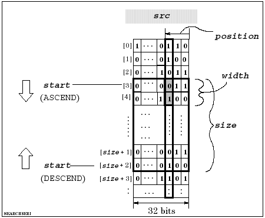

DSP_SEARCH_SERI
This API searches for a specified bit pattern that is contained in consecutive elements of an array.
DSP_SEARCH_SERI searches for the pattern that is contained in consecutive elements. position specifies which bit in each element to search. For example, position = 3 specifies bit2. So, DSP_SEARCH_SERI searches for the pattern in bit2 of consecutive elements.
The search starts at the start element. The search direction is specified by direction. The number of elements searched is specified by size as follows:

pattern must be a decimal integer that corresponds to the desired bit pattern. For example, to search for "110", specify "6" for pattern.
After pattern is found match times, the subscript of the corresponding element is stored into found. This is the lowest subscript of consecutive elements that contain the pattern.
If the number of pattern bits is more than width, DSP_SEARCH_SERI searches for the rightmost width bits of pattern. For example, if width is 2 and pattern is "1001" ("9" in decimal format), DSP_SEARCH_SERI searches for the right two bits "01" ("1" in decimal format).
If the pattern is not found match times, DSP_SEARCH_SERI returns "-1" to found, instead of a subscript.
The bit order of pattern is subscript order, even if direction is DESCEND .
This API is defined in the header file /opt/hp93000/soc/prod_com/include/MAPI/libdsp.h.
Syntax
DSP_SEARCH_SERI(ARRAY_I& src, INT *found,
INT size, INT start, INT pattern,
INT width, INT position, INT match,
INT direction);
DSP_SEARCH_SERI(INT *src, INT *found, INT size,
INT start, INT pattern, INT width,
INT position, INT match,
INT direction);I/O |
Parameter |
Description / Range |
|---|---|---|
I |
src |
Source array |
O |
found |
Found point After pattern is found match times, the subscript of the corresponding element is stored into found. |
I |
array_size |
Size of array to be processed |
I |
size |
Number of elements to be processed 1 ≤ size ≤ 2097152 size ≤ (size of src) |
I |
start |
Subscript at which to start the search For direction = ASCEND, 0 ≤ start ≤ (number of source array) - size + 1 For direction = DESCEND, size -1 ≤ start ≤ (number of source array) |
I |
pattern |
Bit pattern to be searched for |
I |
width |
Number of valid bits for pattern 1 ≤ width ≤ 32 |
I |
position |
Bit position |
I |
match |
After pattern is found match times, the subscript of the corresponding element is stored into found. |
I |
direction |
Direction of searching ASCEND: Ascending (increasing subscripts) DESCEND: Descending (decreasing subscripts) |
Example
It is assumed that the source array has the following elements:
source[0] = 0...001010
source[1] = 0...000101
source[2] = 0...011111
source[3] = 0...010001
source[4] = 0...001110
source[5] = 0...010111
source[6] = 0...010000
source[7] = 0...001111
source[8] = 0...010101
source[9] = 0...011010
DSP_SEARCH_SERI(source, point, 10, 0, 6, 3, 3, 2, ASCEND);
DSP_SEARCH_SERI searches for bit pattern "110". DSP_SEARCH_SERI searches bit 2 from subscripts 0 to 9. The pattern is found starting at subscripts 1, 4, and 7. So, DSP_SEARCH_SERI returns 4 to point because this is the subscript of the 2nd match in the ascending direction.
DSP_SEARCH_SERI(source, point, 10, 9, 1, 2, 1, 3, DESCEND);
DSP_SEARCH_SERI searches for bit pattern "01". DSP_SEARCH_SERI searches bit 0 from subscripts 9 to 0. The pattern is found starting at subscripts 6, 4, and 0. So, DSP_SEARCH_SERI returns 0 to point because this is the subscript of the 3rd match in the descending direction.